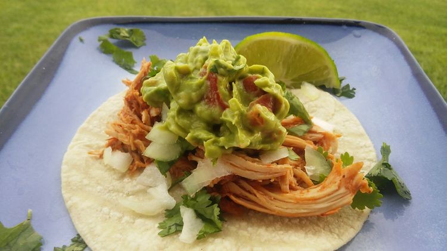

Homepage
Chicken Tacos

Description
These mini tacos are great for a quick and easy meal or as an appetizer.
These little dynamites are my favorite because they are packed with flavor
and look great too!
Ingredients
- 6 (5 inch) corn tortillas
- 3 cups chopped cooked chicken
- 4 sprigs fresh cilantro, chopped
- ½ cup chopped white onion
- 1 cup guacamole
- 1 lime, cut into wedges
Directions
-
Place a paper towel on a microwave-safe plate and top with tortillas;
heat in the microwave for 10 seconds.
-
Place chicken in a microwave-safe bowl; heat in the microwave until
heated through, 30 seconds to 1 minute.
-
Layer chicken, cilantro, onion, and guacamole, in that order, onto each
tortilla. Squeeze lime juice over each taco.
Recipe is by I <3 Cooking! and can be found on
allrecipes.com